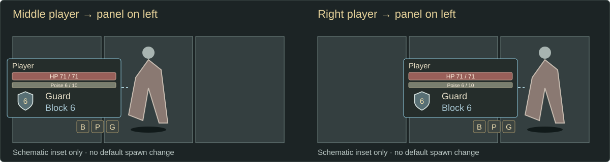
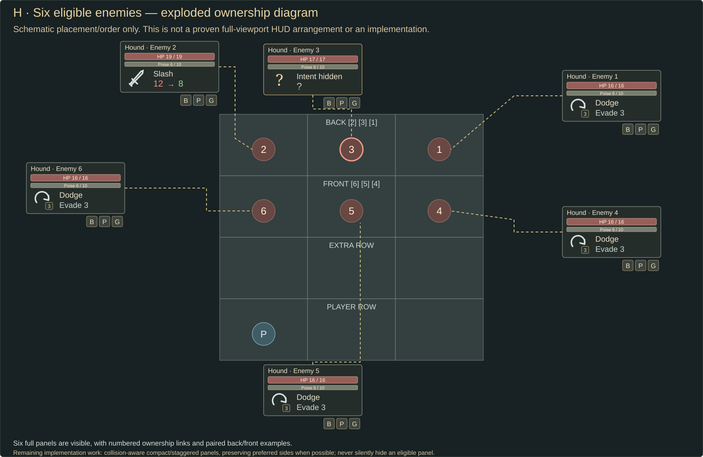
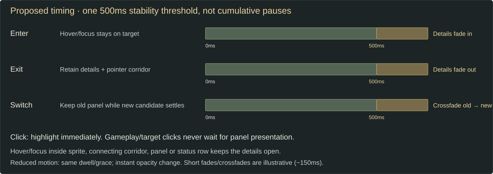

Open full-size state ↗
Soft cell tint = eligible candidate. Strong outline = focused target. Selected panels retain overhead intent/damage while removing overhead HP.
Player middle/right placement

Panel and pointer corridor
Status icons support hover, focus or selection. A continuous pointer corridor joins sprite and panel; staying in this region or the status row keeps the panel open.
H · Six-target ownership supplement
Exploded schematic only: not a proven full-viewport HUD fit or an implementation. All six panels stay visible; numbered links show ownership. Crowded back/front pairs still need collision-aware compact/staggered placement before implementation.

Open full-size H diagram
Proposed timing interpretation

For approval: hover/focus enters after 500ms stability; leaving retains detail for 500ms; switching waits for the new candidate to stabilize for 500ms, then crossfades. These are not three cumulative pauses. Explicit clicks highlight immediately; targeting and gameplay never wait. Reduced motion uses the same dwell/grace with instant opacity changes.